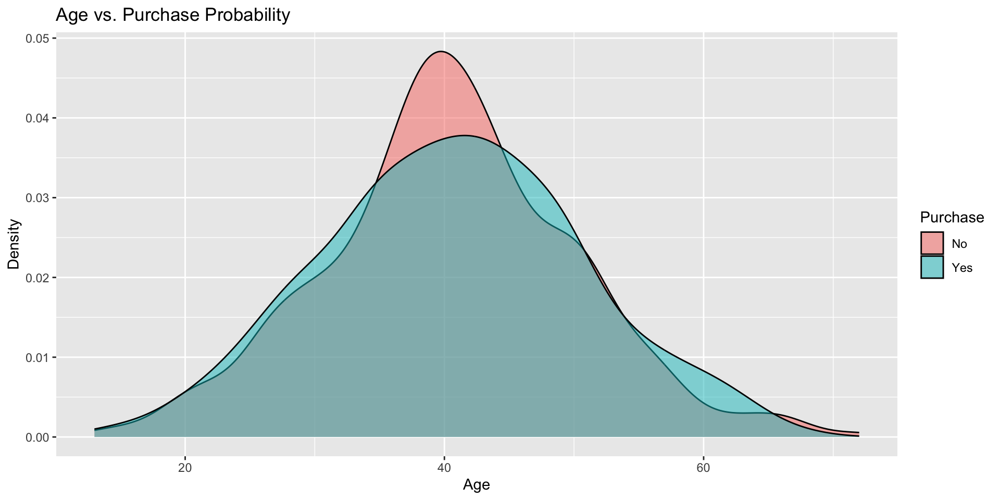
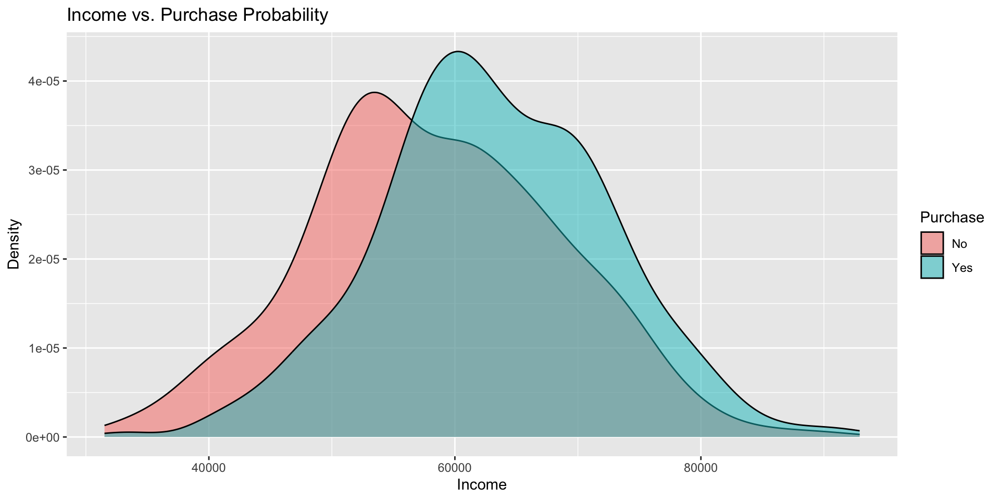
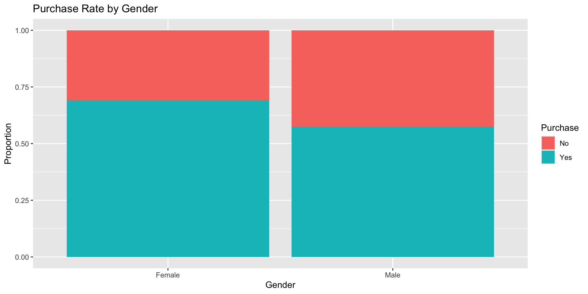
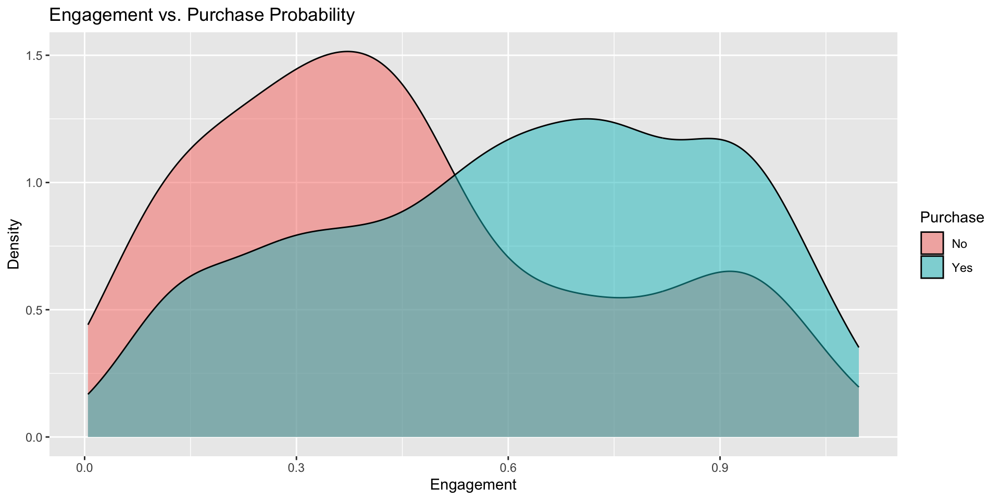
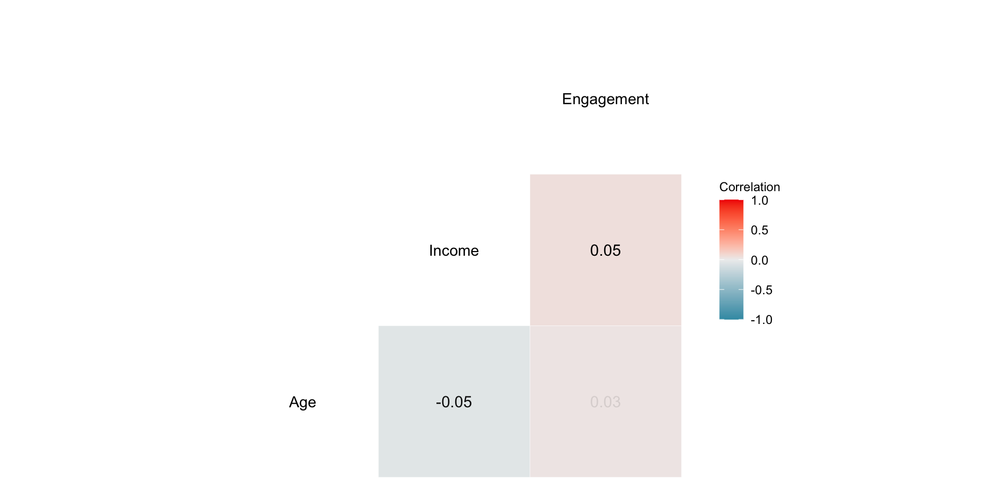
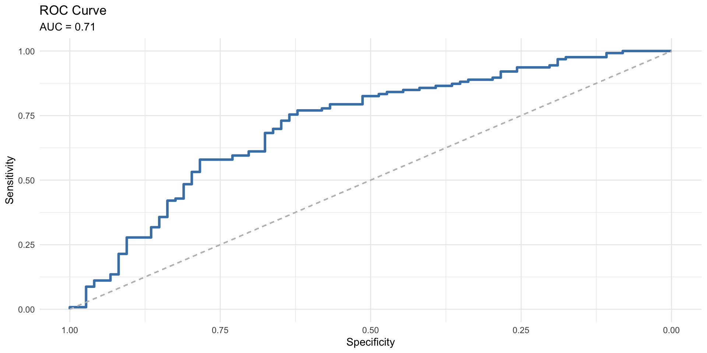
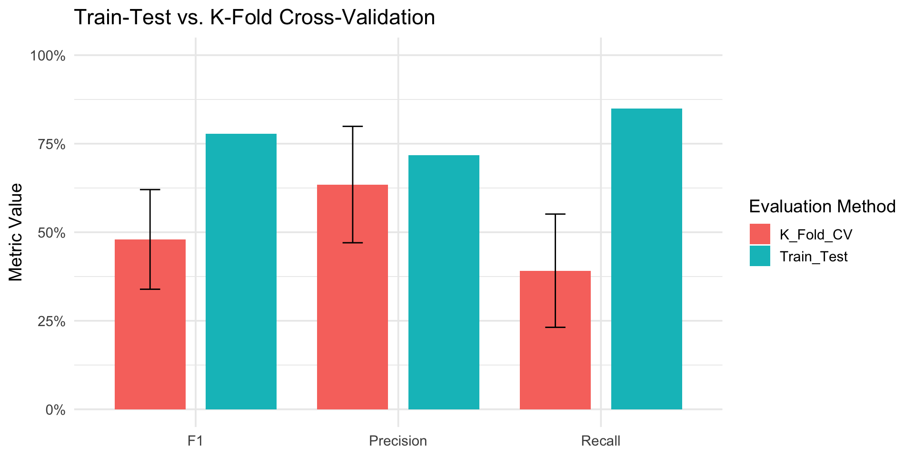

# Uncomment and install if needed:
# install.packages("caret")
# install.packages("dplyr")
# install.packages("pROC")
library(caret)
library(dplyr)
library(pROC)
set.seed(123) # ensures reproducibility
n <- 1000
# 1) Generate basic customer attributes
Age <- round(rnorm(n, mean = 40, sd = 10))
Gender <- sample(c("Male", "Female"), n, replace = TRUE)
Income <- round(rnorm(n, mean = 60000, sd = 10000))
Engagement <- runif(n, min = 0, max = 1)
# 2) Make some feature shifts to mimic demographic differences
# (Optional step to create more distinct sub-groups)
Engagement[Gender == "Female"] <- Engagement[Gender == "Female"] + 0.1
Income[Gender == "Female"] <- Income[Gender == "Female"] + 3000
Age[Gender == "Female"] <- Age[Gender == "Female"] + 1
# 3) Define business rules / assumptions for purchase probability
# We'll combine a baseline with increments/decrements based on thresholds.
baseline_prob <- 0.2
purchase_prob <- rep(baseline_prob, n)
# a) Customers with higher engagement more likely to buy
purchase_prob[Engagement >= 0.5] <- purchase_prob[Engagement >= 0.5] + 0.3
# b) Higher income is a strong indicator of potential purchase
purchase_prob[Income >= 55000] <- purchase_prob[Income >= 55000] + 0.25
# c) Suppose 'Female' customers have a slight bump in probability
purchase_prob[Gender == "Female"] <- purchase_prob[Gender == "Female"] + 0.1
# d) Age effect: perhaps older customers (>=45) have slightly higher probability
purchase_prob[Age >= 45] <- purchase_prob[Age >= 45] + 0.05
# 4) Add random noise to reflect real-world unpredictability
# (some random variation that might increase or decrease probabilities)
noise <- rnorm(n, mean = 0, sd = 0.05)
purchase_prob <- purchase_prob + noise
# 5) Clamp probabilities to valid [0, 1] range
purchase_prob <- pmin(pmax(purchase_prob, 0.01), 0.99)
# 6) Generate the Purchase variable via Bernoulli trials
Purchase <- rbinom(n, size = 1, prob = purchase_prob)
# 7) Combine into a data frame
df <- data.frame(
Age = Age,
Gender = factor(Gender),
Income = Income,
Engagement = Engagement,
Purchase = factor(Purchase, labels = c("No", "Yes"))
)
# Quick checks
table(df$Purchase)
head(df)MGMT 17300: Data Mining Lab
Model Evaluation with Logistic Regression
Professor: Davi Moreira
Overview
- Introduction to Logistic Regression
- Train-Test Split
- Model Training: Fitting a Logistic Regression Model
- Predictions on the Test Set
Model Evaluation
- Confusion Matrix
- Sensitivity
- Specificity
- Precision
- F1 Score
- Balanced Accuracy
- ROC Curve & AUC
K-Fold Cross-Validation
Motivation
What is a classification problem?

Classification involves categorizing data into predefined classes or groups based on their features.
Introduction to Logistic Regression
What is Logistic Regression?
A statistical method used for binary classification tasks.
Predicts the probability of an event occurring (e.g., Yes or No).
Useful for tasks like determining if a customer will make a purchase.
Why Logistic Regression?
Handles binary outcomes effectively.
Provides interpretable results (log-odds, odds ratios, and probability).
Can handle continuous and categorical predictors.
Logistic Regression Framework
Assumptions
Binary Dependent Variable: Logistic regression predicts probabilities for two categories.
Independent Observations: Data points should be independent of each other.
Linearity in the Log-Odds: The log-odds of the dependent variable should be linearly related to the independent variables.
No Multicollinearity: Independent variables should not be highly correlated.
The Logistic Regression Model
Log-Odds Equation
\[ \text{logit}(P) = \log\left(\frac{P}{1-P}\right) = \beta_0 + \beta_1X_1 + \beta_2X_2 + \dots + \beta_nX_n \]
- \(P\): Probability of the outcome (e.g., Purchase = Yes).
- \(X_1, X_2, \dots, X_n\): Predictor variables.
- \(\beta_0, \beta_1, \dots, \beta_n\): Coefficients.
Converting Log-Odds to Probability
\[ P = \frac{1}{1 + e^{-\text{logit}(P)}} \]
Generating a Synthetic Business Dataset
Generating a Synthetic Business Dataset
In many business scenarios, we aim to predict whether a customer will make a purchase based on collected information, usually on demographic and engagement factors. Our synthetic dataset simulates a simplified version of real-world data, capturing:
- Age: Customer’s age, distributed around 40 years old with some variation
- Gender: Categorical variable indicating
"Male"or"Female"
- Income: Approximate annual income in US dollars
- Engagement: A normalized score (0 to 1) reflecting how actively a customer interacts with the business (e.g., website visits, email clicks, etc.)
- Purchase: A binary outcome (
"No"or"Yes") indicating whether the customer decided to buy a product
Generating a Synthetic Business Dataset
Exploratory Data Analysis (EDA)
Summary Statistics
Age vs. Purchase Probability
Income vs. Purchase Probability
Purchase Rate by Gender
Purchase Probability by Engagement
Correlation Matrix
Train-Test Split
Train-Test Split
Randomly split the data into train (80%) and test (20%) for unbiased evaluation. This process ensures that the model is trained on one subset of the data and evaluated on another subset, mimicking real-world scenarios where predictions are made on unseen data. It helps to assess how well the model generalizes to new information.
Baseline Prediction
The baseline prediction is the proportion of customers who made a purchase:
Interpretation:
- This baseline represents the probability of a purchase if no predictors are used.
- It serves as a reference point to evaluate the added value of the logistic regression model.
Model Training
Fitting a Logistic Regression Model
Fitting a Logistic Regression Model
We fit a logistic regression model on the training data and model the relationship between a binary dependent variable and one or more independent variables. Here, we predict the probability of purchase (Purchase) based on customer attributes (Age, Gender, Income, and Engagement).
This step includes specifying:
The formula (
Purchase ~ Age + Gender + Income + Engagement), which defines the relationship between the dependent and independent variables.The method (
glm), indicating that we are using a generalized linear model.The link function (
binomial(link = "logit")), ensuring the model estimates probabilities using the logistic function.
set.seed(123)
train_control <- trainControl(
classProbs = TRUE,
summaryFunction = prSummary # <--- uses Precision, Recall, F, AUC
)
model_fit <- train(
Purchase ~ Age + Gender + Income + Engagement,
data = train_data,
method = "glm",
family = binomial(link = "logit"),
trControl = train_control,
metric = "F" # or "AUC", "Precision", "Recall"
)
summary(model_fit$finalModel)The summary provides details about the model’s coefficients, which indicate the strength and direction of each predictor’s influence on the purchase probability.
Predictions on the Test Set
Predictions on the Test Set
To evaluate the model, we obtain predictions for the test set. This involves two steps:
Class Predictions: Predicting the most likely class (e.g.,
YesorNo) for each observation.Probability Predictions: Predicting the probability of each class, which provides more nuanced insights.
This allows us to assess the model’s ability to generalize to unseen data and evaluate its performance using metrics such as accuracy, ROC-AUC, and confusion matrix.
By analyzing these predictions, we can determine how well the model distinguishes between Yes and No cases and identify areas for improvement.
Model Evaluation
Confusion Matrix
The confusion matrix provides a summary of prediction results. It compares the predicted and actual classes, offering insights into the model’s classification performance.
| Predicted: 0 | Predicted: 1 | |
|---|---|---|
| Actual: 0 | True Negative (TN) | False Positive (FP) |
| Actual: 1 | False Negative (FN) | True Positive (TP) |
Confusion Matrix
Key metrics derived from the confusion matrix include:
| Metric | Value |
|---|---|
| Accuracy | 0.6950 |
| Sensitivity (Recall) | 0.8492 |
| Specificity | 0.4324 |
| Precision | 0.7181 |
| F1 Score | 0.7782 |
- Accuracy: The proportion of correct predictions.
- Sensitivity (Recall): The model’s ability to identify positive cases.
- Specificity: The model’s ability to identify negative cases.
- Precision: Among predicted positive cases, the proportion that are truly positive.
- F1 Score: The harmonic mean of Precision and Sensitivity, balancing false positives and false negatives.
Accuracy
| Predicted: 0 | Predicted: 1 | |
|---|---|---|
| Actual: 0 | True Negative (TN) | False Positive (FP) |
| Actual: 1 | False Negative (FN) | True Positive (TP) |
\[ \text{Accuracy} = \frac{\text{TP} + \text{TN}}{\text{TP} + \text{TN} + \text{FP} + \text{FN}} \]
Overall effectiveness of the model.
In the context of weather forecasting, for example, accuracy reflects how well a model predicts weather events correctly (e.g., rainy or sunny days).
High accuracy: lots of correct predictions!
Recall (Sensitivity)
| Predicted: 0 | Predicted: 1 | |
|---|---|---|
| Actual: 0 | True Negative (TN) | False Positive (FP) |
| Actual: 1 | False Negative (FN) | True Positive (TP) |
\[ \text{Recall} = \frac{\text{TP}}{\text{TP} + \text{FN}} \]
Is the fraction of positives correctly identified.
In criminal justice, it would assess how well a predictive policing model identifies all potential criminal activities (True Positives) without missing any (thus minimizing False Negatives).
High recall: low false-negative rates.
Specificity
| Predicted: 0 | Predicted: 1 | |
|---|---|---|
| Actual: 0 | True Negative (TN) | False Positive (FP) |
| Actual: 1 | False Negative (FN) | True Positive (TP) |
\[ \text{Specificity} = \frac{\text{TN}}{\text{TN} + \text{FP}} \]
It is the true negative rate, measuring a model’s ability to correctly identify actual negatives.
Crucial in fields where incorrectly identifying a negative case as positive could have serious implications (e.g., criminal justice).
High specificity: the model is very effective at identifying true negatives.
Precision
| Predicted: 0 | Predicted: 1 | |
|---|---|---|
| Actual: 0 | True Negative (TN) | False Positive (FP) |
| Actual: 1 | False Negative (FN) | True Positive (TP) |
\[ \text{Precision} = \frac{\text{TP}}{\text{TP} + \text{FP}} \]
Accuracy of positive predictions.
In email spam detection, it would indicate the percentage of emails correctly identified as spam (True Positives) out of all emails flagged as spam, aiming to reduce the number of legitimate emails incorrectly marked as spam (False Positives).
High precision: low false-positive rates.
F1-Score
| Predicted: 0 | Predicted: 1 | |
|---|---|---|
| Actual: 0 | True Negative (TN) | False Positive (FP) |
| Actual: 1 | False Negative (FN) | True Positive (TP) |
\[ \text{F1} = 2 \cdot \frac{\text{Precision} \cdot \text{Recall}}{\text{Precision} + \text{Recall}} \]
Harmonic mean of Precision and Recall.
In a medical diagnosis scenario, it would help in evaluating a test’s effectiveness in correctly identifying patients with a disease (True Positives) while minimizing the misclassification of healthy individuals as diseased (False Positives and False Negatives).
High F1 score: a better balance between precision and recall.
ROC Curve & AUC
ROC Curve & AUC
The ROC (Receiver Operating Characteristic) curve is a graphical representation that illustrates the trade-off between the true positive rate (Sensitivity) and the false positive rate (1 - Specificity) across various threshold values. The AUC (Area Under the Curve) summarizes the ROC curve into a single value, indicating the model’s overall performance.
AUC Interpretation:
- AUC \(\approx\) 1: The model has near-perfect predictive capability.
- AUC \(\approx\) 0.5: The model performs no better than random guessing.
ROC Curve & AUC
The ROC curve and AUC provide a comprehensive evaluation of the model’s discriminatory power.

AUC Value: Indicates the likelihood that the model will correctly distinguish between a positive and a negative instance. Higher values reflect better model performance.
K-Fold Cross-Validation
K-Fold Cross-Validation
K-Fold Cross-Validation is a resampling technique that evaluates model performance by dividing the dataset into k subsets (folds). The model is trained on k-1 folds and validated on the remaining fold, repeating this process \(k\) times to ensure each fold serves as the validation set once.
Advantages of K-Fold Cross-Validation:
- Reduces overfitting by training and validating on different subsets.
- Provides a more reliable estimate of model performance compared to a single train-test split.
- Ensures the model generalizes well to unseen data.
K-Fold Cross-Validation
# install.packages("MLmetrics")
library(MLmetrics)
set.seed(123)
train_control <- trainControl(
method = "cv",
number = 10,
p = .8,
classProbs = TRUE,
summaryFunction = prSummary # <--- uses Precision, Recall, F, AUC
)
model_cv <- train(
Purchase ~ .,
data = train_data, # or your entire df, depending on your design
method = "glm",
family = binomial(link = "logit"),
trControl = train_control,
metric = "F" # or "AUC", "Precision", "Recall"
)
# Inspect the cross-validation results:
# model_cv # Displays cross-validated model performance
model_cv$resultsComparing Train-Test Performance and K-Fold Cross-Validation Performance
Comparing Train-Test Performance and K-Fold Cross-Validation Performance
Assessing Model Generalization
- Train-Test Performance evaluates how well a model generalizes to unseen data from a single split.
- K-Fold Cross-Validation provides a more robust performance estimate across multiple splits.
- Comparing the two ensures consistent performance on unseen data.
Detecting Overfitting or Underfitting
- Overfitting: Train-test performance is much better than K-Fold performance.
- Underfitting: Both metrics show poor performance.
- The comparison highlights issues with model complexity.
Mitigating Sampling Bias
- Single splits (train-test) can introduce sampling bias, especially with small datasets.
- Cross-validation averages performance across folds, reducing bias.
- Ensures reliability of performance estimates.
Understanding Variance in Model Evaluation
- Train-test performance can vary based on split choice.
- K-Fold Cross-Validation offers insights into the variance of the performance estimate.
- Aids in strategies to reduce variance, such as adding more data.
Model Selection and Hyperparameter Tuning
- Cross-validation is used for stable performance estimates during training.
- Train-Test Performance validates the chosen model’s final performance.
- Discrepancies indicate potential overfitting during tuning.
Real-World Applicability
- Train-Test: Simpler, faster, checks practical performance on unseen data.
- K-Fold Cross-Validation: Provides theoretical robustness.
- Bridging evaluation theory and deployment performance.
Comparing Train-Test Performance and K-Fold Cross-Validation Performance
# =========================
# Load required packages
# =========================
library(caret)
library(pROC)
# =========================
# Single Train-Test Performance
# =========================
# 1. Compute confusion matrix to get Precision, Recall, F1
train_test_metrics <- confusionMatrix(
data = pred_classes,
reference = test_data$Purchase,
positive = "Yes"
)
# 2. Calculate AUC on the test set
roc_obj_test <- roc(test_data$Purchase, pred_probs$Yes, levels = c("No", "Yes"))
auc_test <- as.numeric(auc(roc_obj_test))
# 3. Obtain 95% CI for the AUC
auc_test_ci <- ci(roc_obj_test, of = "auc") # typically returns c(lower, median, upper)
# 4. Extract the relevant metrics
train_test_results <- list(
AUC = auc_test,
Precision = train_test_metrics$byClass[["Pos Pred Value"]],
Recall = train_test_metrics$byClass[["Sensitivity"]],
F1 = train_test_metrics$byClass[["F1"]]
)
# =========================
# K-Fold Cross-Validation Metrics
# =========================
# Identify the row with the highest F in model_cv
best_idx <- which.max(model_cv$results$F)
cv_metrics <- model_cv$results[best_idx, ]
# Assuming model_cv$results contains columns like:
# AUC, AUCSD, Precision, PrecisionSD, Recall, RecallSD, F, FSD
# (from a custom prSummary or similar)
cv_results <- list(
AUC = cv_metrics[["AUC"]],
AUC_lower = cv_metrics[["AUC"]] - 1.96 * cv_metrics[["AUCSD"]],
AUC_upper = cv_metrics[["AUC"]] + 1.96 * cv_metrics[["AUCSD"]],
Precision = cv_metrics[["Precision"]],
Precision_lower = cv_metrics[["Precision"]] - 1.96 * cv_metrics[["PrecisionSD"]],
Precision_upper = cv_metrics[["Precision"]] + 1.96 * cv_metrics[["PrecisionSD"]],
Recall = cv_metrics[["Recall"]],
Recall_lower = cv_metrics[["Recall"]] - 1.96 * cv_metrics[["RecallSD"]],
Recall_upper = cv_metrics[["Recall"]] + 1.96 * cv_metrics[["RecallSD"]],
F1 = cv_metrics[["F"]],
F1_lower = cv_metrics[["F"]] - 1.96 * cv_metrics[["FSD"]],
F1_upper = cv_metrics[["F"]] + 1.96 * cv_metrics[["FSD"]]
)
# =========================
# Combine Results
# =========================
comparison <- list(
Train_Test = train_test_results,
K_Fold_CV = cv_results
)
comparisonVisualizing Single Train-Test vs K-Fold CV
Summary
Summary
Main Takeaways from this lecture:
Logistic Regression Framework - Logistic regression is a powerful method for binary classification. - Key assumptions: - Binary dependent variable. - Linearity in log-odds. - No multicollinearity among predictors.
Evaluation Metrics
Confusion Matrix provides:
- Sensitivity (Recall)
- Specificity
- Precision
- F1 Score
ROC Curve and AUC evaluate model discrimination across thresholds.
Train-Test Split:
- Ensures the model is trained and tested on separate datasets.
- Baseline accuracy serves as a benchmark for improvement.
K-Fold Cross-Validation:
- Reduces overfitting and sampling bias.
- Provides a reliable estimate of model performance.
Performance Comparison
- Cross-validation metrics give a robust view of generalization.
- Train-test split results provide practical insights for deployment.
- Use both approaches for a comprehensive evaluation.
Thank you!
Data Mining Lab